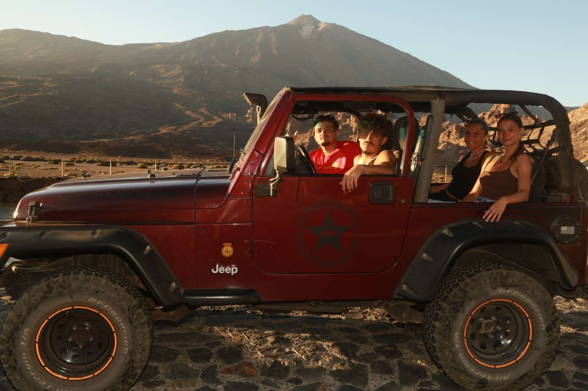
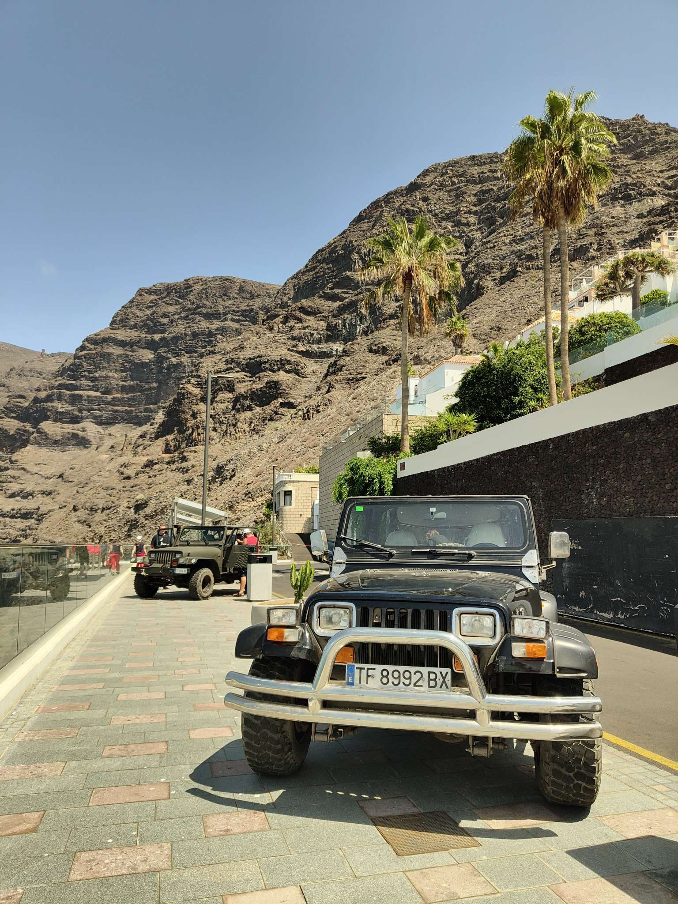
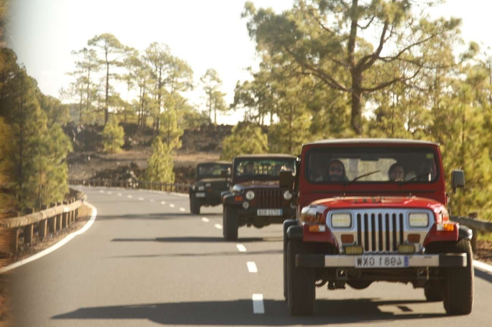
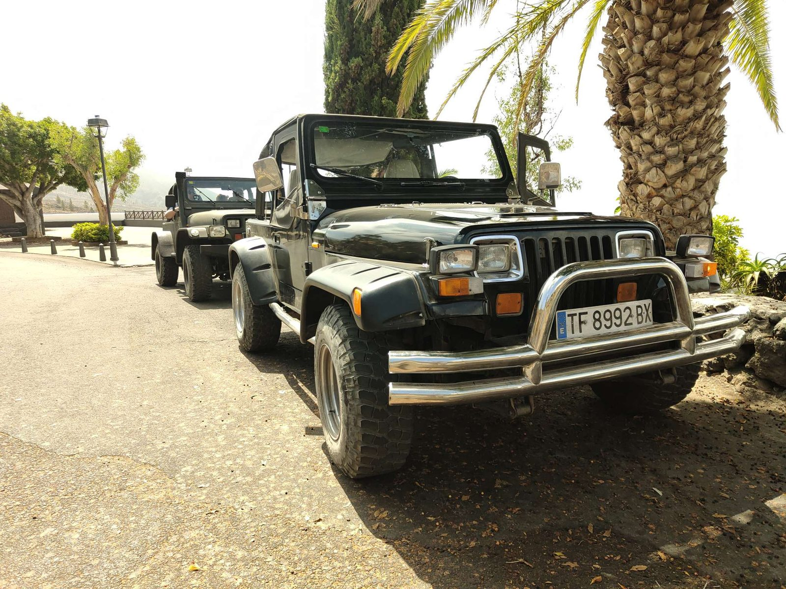
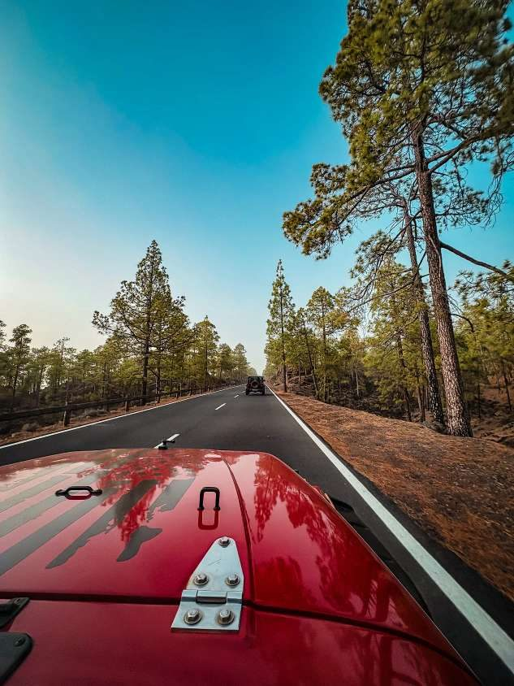
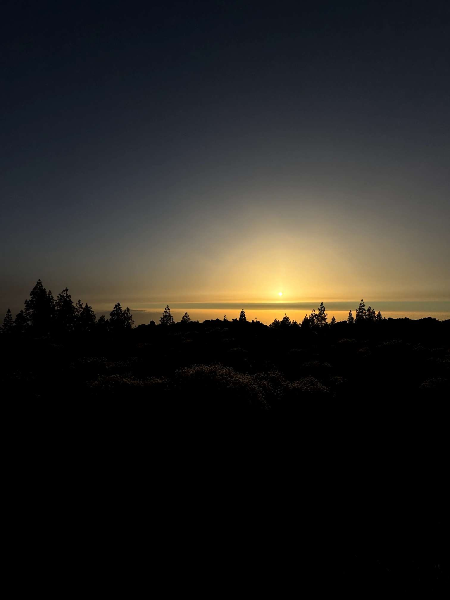
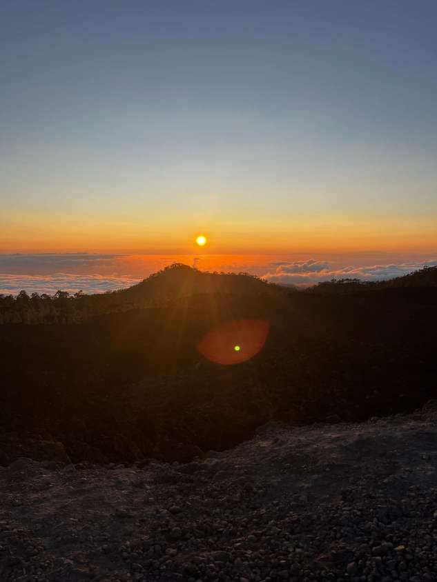
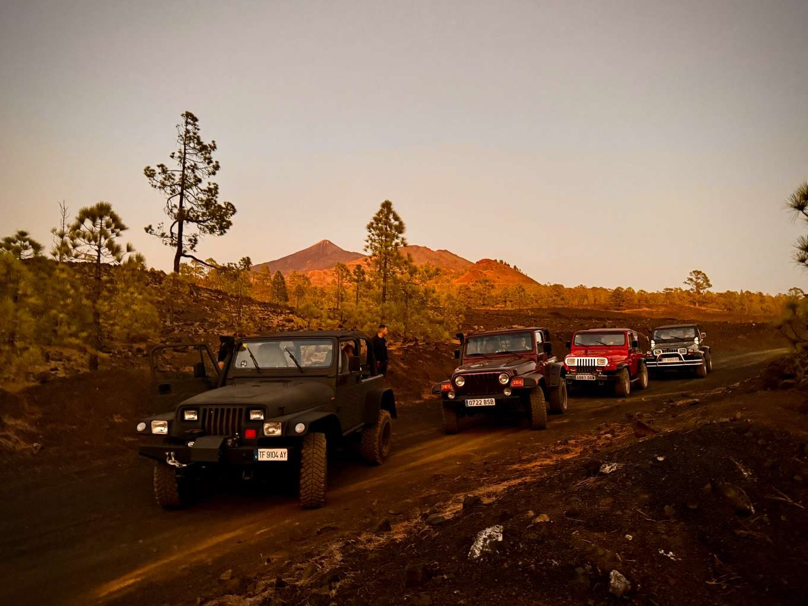

Scopri Tenerife in modo autentico ed emozionante con un'esperienza guidata in Jeep Wrangler, pensata per chi vuole andare oltre i percorsi convenzionali e connettersi con l'isola nel suo stato più puro.
Un percorso di circa 3 ore e mezza attraverso paesaggi vulcanici, strade panoramiche e rotte off-road selezionate, combinando natura, avventura e viste spettacolari.
Vulcani, colate di lava e mirador di alta montagna.
Luce dorata, tramonto sull'oceano e sensazioni uniche.
Contrasti tra mare, scogliere e paesi del sud.
Puoi guidare una Jeep (fino a 4 persone per veicolo) oppure goderti l'esperienza come passeggero con conducente privato. Un'opzione flessibile, ideale sia per avventurieri sia per chi preferisce rilassarsi e godersi il paesaggio.







Disponibilità e orari su richiesta
💬 Contattaci su WhatsApp